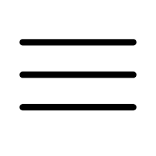

주요태그
버튼
a태그 : 페이지에서 다른 페이지로 이동할 경우, 페이지 안에서 다른 컨텐츠로 이동할 경우 a태그를 사용한다.
<a href="naver.com" target="_blank" title="새창열림">네이버</a>button태그 : 클릭 이벤트를 적용할 경우 button태그를 사용한다.
<button>이동</button>input·Select
생년월일 input 태그 사용방법
<div>
<label for="memberyy">생년월일</label>
<div>
<input type="text" id="memberyy" placeholder="년도(4자)" maxlength="4" title="년도(4자)">
<select id="membermm" title="월" aria-label="선택하세요">
<option>월</option>
<option value="01">1</option>
<option value="02">2</option>
<option value="03">3</option>
<option value="04">4</option>
<option value="05">5</option>
<option value="06">6</option>
<option value="07">7</option>
<option value="08">8</option>
<option value="09">9</option>
<option value="10">10</option>
<option value="11">11</option>
<option value="12">12</option>
</select>
<input type="text" id="memberdd" placeholder="일" maxlength="2" title="일">
</div>
</div>휴대폰번호 input 태그 사용방법
<div>
<label for="phonefirst">휴대폰번호</label>
<div>
<select id="phonefirst" title="앞 번호" aria-label="선택하세요">
<option>앞 번호</option>
<option value="010" selected="selected">010</option>
<option value="011">011</option>
<option value="016">016</option>
<option value="017">017</option>
<option value="018">018</option>
</select>
<input type="text" id="phonemiddle" placeholder="중간 번호" maxlength="4" title="중간 번호">
<input type="text" id="phoneend" placeholder="끝 번호" maxlength="4" title="끝 번호">
</div>
</div>이메일 input 태그 사용방법
<div>
<label for="emailfirst">이메일</label>
<div>
<input type="text" id="emailfirst" placeholder="이메일 입력" maxlength="4" title="이메일 입력">
<select id="phonefirst" title="이메일 주소 선택" aria-label="선택하세요">
<option>이메일 주소 선택</option>
<option value="naver.com">naver.com</option>
<option value="gmail.com">gmail.com</option>
<option value="hanmail.net">hanmail.net</option>
<option value="daum.net">daum.net</option>
</select>
</div>
</div>aria-label
html 모든 태그에 사용가능 하며 이미지를 사용해 시각적 표현을 할 경우 대체 텍스트 역할로 사용한다.

<button aria-label="전체메뉴"></button>title
title 속성이 있는 요소에 대한 지침 또는 설명 등의 참고할 만한 정보제공 한다.
- 링크에서의 사용 : 링크에서는 대상 리소스에 대한 설명이나 제목이 될 수 있습니다
<a href="naver.com" target="_blank" title="새창열림">네이버</a>- 문단에서의 사용 : 문단에서는 텍스트에 대한 각주나 해설이 될 수 있습니다.
<p>쉽고 재미있는 <p title="Hypertext Markup Language">HTML</p>을 배웁시다!</p>- 인용에서의 사용 : 인용의 경우 출처에 대한 추가 정보가 될 수 있습니다.
<blockquote title="위키백과에서 인용한 월드 와이드 웹의 정의">
월드 와이드 웹(World Wide Web, WWW, W3)은 인터넷에 연결된 컴퓨터를 통해
사람들이 정보를 공유할 수 있는 전 세계적인 정보 공간을 말한다.
</blockquote>- 대화형 콘텐츠에서의 사용 : 대화형 콘텐츠에서는 요소 사용에 대한 레이블이나 지침이 될 수 있습니다.
<button title="이 버튼을 클릭하여 확인하세요.">확인</button>- 콘텐츠의 접근성을 고려한 조언 정보 : 기타 웹 콘텐츠의 접근성을 고려한 조언 정보를 나타냅니다. 이것은 사용자들이 스크린 리더 및 보조 기술을 통해 웹 페이지를 이해하고 상호 작용할 수 있도록 돕습니다.
<div title="이 부분은 중요합니다.">
<p>페이지 내용의 중요한 부분입니다.</p>
</div>